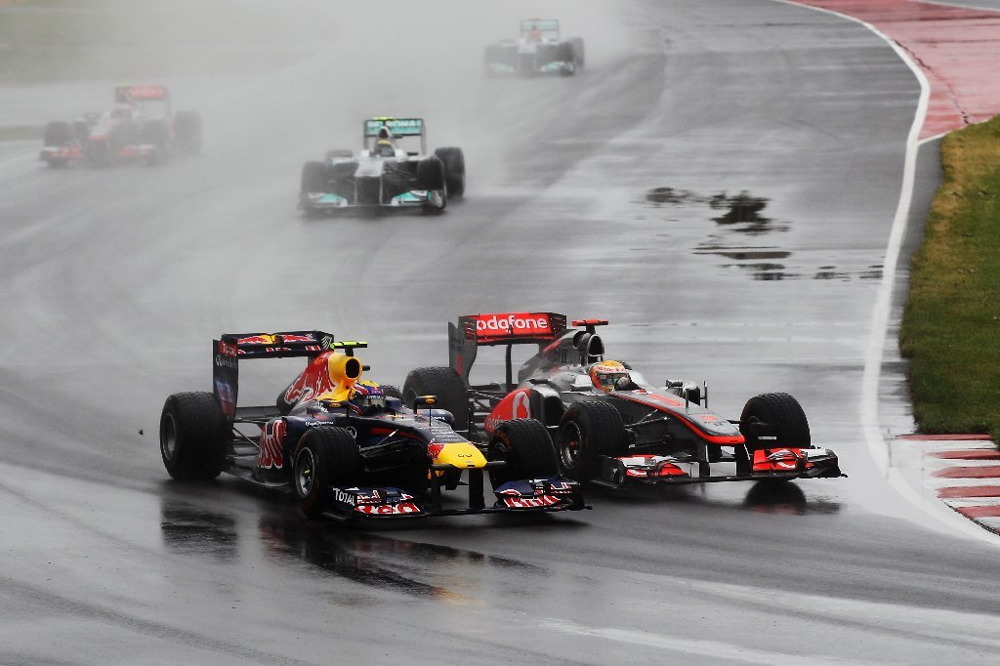

El Gran Premio más largo de la historia de la Formula 1
El Gran Premio de Canadá de Fórmula 1, celebrado en el circuito Gilles Villeneuve en Montreal, es conocido por una curiosidad histórica que lo hace especialmente memorable: el final del Gran Premio de Canadá de 2011 es considerado uno de los más emocionantes y dramáticos en la historia de la Fórmula 1. Aquí te dejo algunas curiosidades sobre esa carrera:
1. La carrera más larga: La carrera de 2011 es famosa por ser la más larga en la historia de la Fórmula 1, con una duración total de 4 horas, 4 minutos y 39.537 segundos. Esto se debió a múltiples interrupciones, incluidas dos banderas rojas y numerosos períodos de coche de seguridad, principalmente a causa de la intensa lluvia.
2. Siete coches de seguridad: Durante la carrera se desplegó el coche de seguridad un total de siete veces, lo cual es un récord en la Fórmula 1.
3. Gran remontada de Jenson Button: Jenson Button, piloto de McLaren, protagonizó una de las remontadas más notables de la historia. Después de estar en el último lugar en un punto de la carrera, incluyendo una colisión con su compañero de equipo Lewis Hamilton y una penalización de drive-through, Button logró recuperar posiciones y, en la última vuelta, adelantó a Sebastian Vettel para ganar la carrera. Button hizo un total de seis paradas en boxes y superó a Vettel debido a un error del alemán en la última vuelta.
4. Desafíos climáticos: La carrera fue notablemente afectada por las condiciones meteorológicas. La lluvia torrencial causó retrasos significativos y muchas interrupciones, lo que hizo que las estrategias de equipo y la habilidad de los pilotos en condiciones mojadas fueran cruciales.
5. Importancia del circuito Gilles Villeneuve: El Circuito Gilles Villeneuve es conocido por su diseño rápido y técnico, que frecuentemente genera carreras emocionantes. El circuito está situado en la isla artificial de Notre Dame en Montreal y es famoso por sus muros cercanos a la pista, especialmente el "Muro de los Campeones" en la última chican, que ha visto estrellarse a muchos campeones mundiales.
Estas curiosidades reflejan la naturaleza impredecible y emocionante del Gran Premio de Canadá, especialmente el de 2011, que sigue siendo una referencia en la historia de la Fórmula 1.
